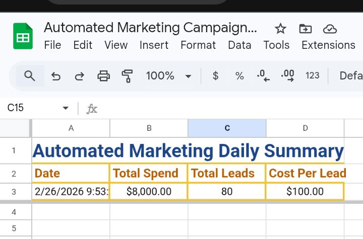
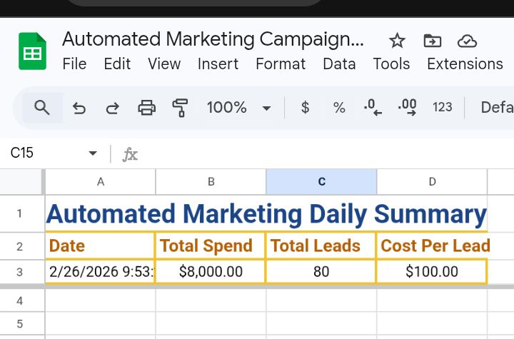

Projects
Automated Daily Marketing KPI Logger
This project is a fully automated marketing reporting system built using Google Sheets and Google Apps Script. It collects raw campaign data (Spend and Leads) from multiple platforms and automatically generates a daily KPI summary without manual input.
The automation runs on time-driven triggers, calculates key performance metrics such as Total Spend, Total Leads, and Cost Per Lead, and logs the results into a Daily Summary sheet. This eliminates repetitive manual reporting tasks and ensures accurate, real-time performance tracking.
- Reads Spend and Leads from Marketing Data sheet
- Calculates Total Spend & Total Leads
- Computes Cost Per Lead
- Appends results automatically to Daily Summary
Tools Used: Google Apps Script, Google Sheets, Time-driven Triggers
 


Sales Performance Dashboard
This project is an automated Sales Performance Dashboard built using Google Sheets and Google Apps Script. It analyzes raw sales data and generates key performance insights such as Total Revenue, Total Quantity Sold, and Top-Selling Product.
The system processes product sales records automatically, calculates totals, and updates visual charts in real time. This eliminates manual calculations and provides a clear business overview through interactive data visualization.
- Tracks product sales data (Date, Product, Quantity, Price)
- Automatically calculates Total Revenue
- Computes Total Quantity Sold
- Identifies Top-Selling Product
- Displays visual comparison charts
Tools Used: Google Sheets, Google Apps Script, Dashboard Design, Data Visualization